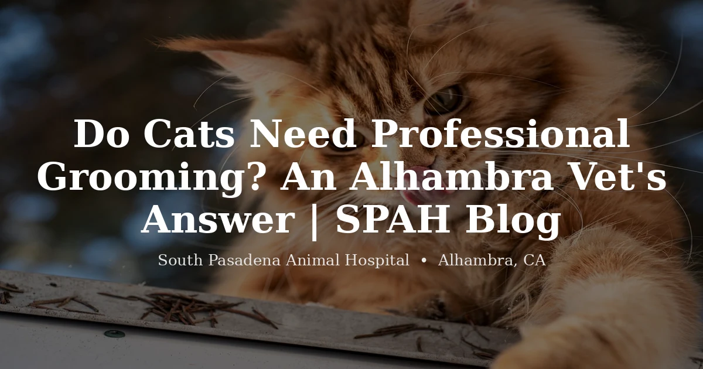

July 13, 2026 · 6 min read
Do Cats Need Professional Grooming?

Cats are the best self-groomers in the house and they know it. A healthy cat spends a serious chunk of the day on maintenance, and the results are usually better than anything we'd achieve with a tub and a bottle of shampoo. So when someone asks whether their cat needs a groomer, our first answer for most cats is genuinely no. Leave them alone. Bathing a cat who is managing perfectly well is mostly a way to make everyone's afternoon worse.
But that answer holds only while the system is working. The cats we do want to see are the ones where it isn't — and the useful question isn't really "does my cat need grooming," it's "why has my cat stopped doing it themselves?"
Long-haired cats never signed up for that coat
One exception is straightforward and has nothing to do with health. Persians, Himalayans, Maine Coons, and the long-haired mixes we see all over the San Gabriel Valley are carrying a coat that no cat evolved to maintain. We bred that coat onto them. A tongue can keep up with a couple of inches of fur; it cannot keep up with a Persian's undercoat, which will mat regardless of how conscientious the cat is.
Those cats need help on an ongoing basis, and it's not a reflection of anything being wrong. Regular combing at home does most of the work. A professional groom every few months handles what builds up anyway.
The cat who used to keep up and doesn't anymore
This is the one we actually care about, and it's the reason a grooming question often turns into a medical visit.
Cats do not get lazy about grooming. When a cat that has kept itself immaculate for eight years starts looking greasy, unkempt, or matted along the back and hindquarters, something has changed — and the coat is the symptom rather than the problem. Arthritis is a big one and hugely underdiagnosed in cats, because cats don't limp the way dogs do; they just quietly stop doing things that hurt, and twisting around to groom the lower back hurts. Weight gain does it mechanically, since a heavy cat physically cannot reach. Dental pain makes using the mouth unappealing. Kidney disease, hyperthyroidism, and most illnesses drop grooming to the bottom of the priority list.
Look at where the neglect is. Cats lose the hardest-to-reach real estate first — the lower back, the base of the tail, the back of the hind legs. A cat whose face and front are pristine but whose rear end is matted isn't a cat who stopped caring. That's a cat who can't get back there, and that's worth an exam. Our page on hyperthyroidism in cats covers one of the conditions that shows up this way.
Mats are not a cosmetic problem
Owners tend to see matting as untidiness. It isn't, once the mats tighten.
A mat pulls on the skin continuously — imagine a knot of your own hair being tugged and never released. The skin under it stays damp and dirty, and it gets sore. We've shaved down cats and found raw, weeping skin, fleas, and wounds that nobody could see because the coat was hiding all of it. The cat, being a cat, said nothing about any of it.
And please leave the scissors in the drawer. Cat skin is thin and it tents up into the base of a mat, which means it is genuinely easy to cut skin while you're certain you're cutting fur. We see these lacerations, and they come from kind, careful people who were trying to help. Fingers and a comb on a loose tangle, fine. Anything tight against the skin needs clippers and someone set up for it.
Why the matted ones end up at a clinic
When a cat is matted to the skin, the groom stops being a grooming job. A frightened cat, clippers, and tight mats over sore skin is a combination that goes badly — for the cat, who gets cut or injured trying to escape, and for whoever is holding them. Plenty of salons will decline these cats, and honestly, that's the responsible answer.
Sedation is what makes it workable, and that requires a veterinarian to examine the cat and decide it's appropriate, which is why these cases land with us rather than a salon. It's not a better haircut. It's the difference between a cat who gets shaved out calmly in twenty minutes and a cat who gets sent home still matted after a bad afternoon. If your cat is in that shape, our cat grooming page explains how we approach it.
If your cat's coat has changed and you're not sure whether it's the coat or the cat, call us at (626) 441-1314. We're at 3116 W Main St in Alhambra, and this is a quick thing to sort out in person — often the coat tells us where to look before we've done anything else.
Questions we hear often
Do cats need professional grooming?
Most short-haired cats never need it — they manage their own coat well, and a bath is usually more stressful than useful. Long-haired breeds like Persians, Himalayans, and Maine Coons are different: their coat outpaces what a tongue can manage, and they mat without help. The other group that needs it is any cat who used to keep up and has stopped, because that change usually points to a reason.
Why has my cat stopped grooming itself?
Because something is making it hard or unpleasant. Arthritis makes the twisting painful and is very common in cats over ten. Weight gain can put the lower back physically out of reach. Dental pain makes using the mouth unappealing. Illness in general drops grooming down the priority list. A cat who has visibly let its coat go over weeks or months is worth an exam.
Are mats actually harmful to cats?
Yes, once they tighten. A mat pulls on the skin constantly, and underneath, the skin stays damp and dirty and can become sore or infected. Severe matting also hides what's beneath it — we regularly find wounds, fleas, and lumps only after the coat comes off.
Can I cut mats out of my cat myself?
Please don't use scissors. Cat skin is thin and tents up into the base of a mat, so it's genuinely easy to cut skin while believing you're cutting fur — we see these lacerations from well-meaning owners. Gentle work with fingers or a comb on a loose tangle is fine. Anything tight against the skin should be shaved out with clippers by someone equipped for it.
Why would a matted cat need sedation to be groomed?
Because a frightened cat plus clippers plus tight mats is unsafe for the cat and the person holding them. When mats are shaved close to skin that's already sore, most cats won't tolerate it awake, and forcing it risks cuts and injuries. Sedation lets the work happen calmly. It's a medical decision requiring a veterinarian to examine the cat first, which is why it's available at a clinic rather than a salon. Ask us about your cat.